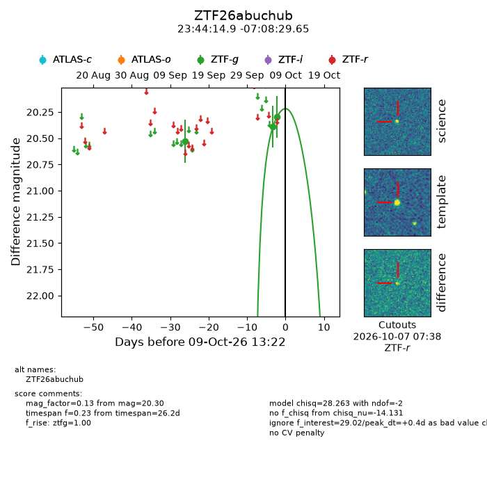
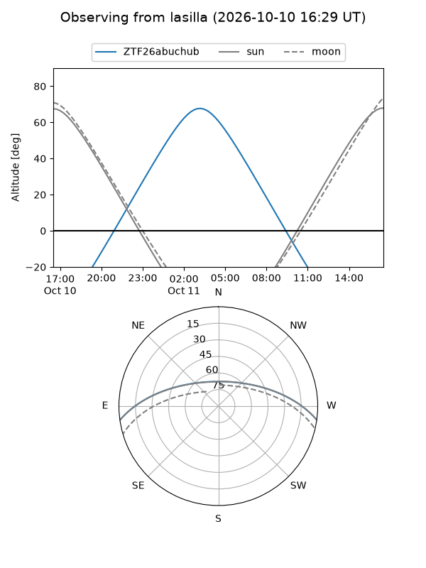
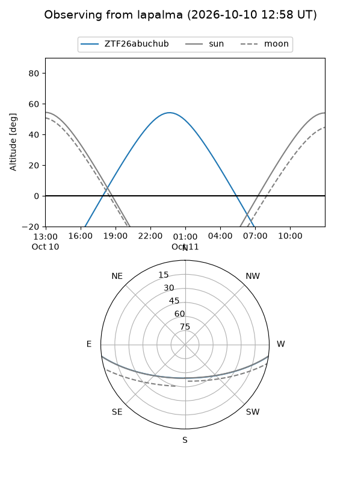
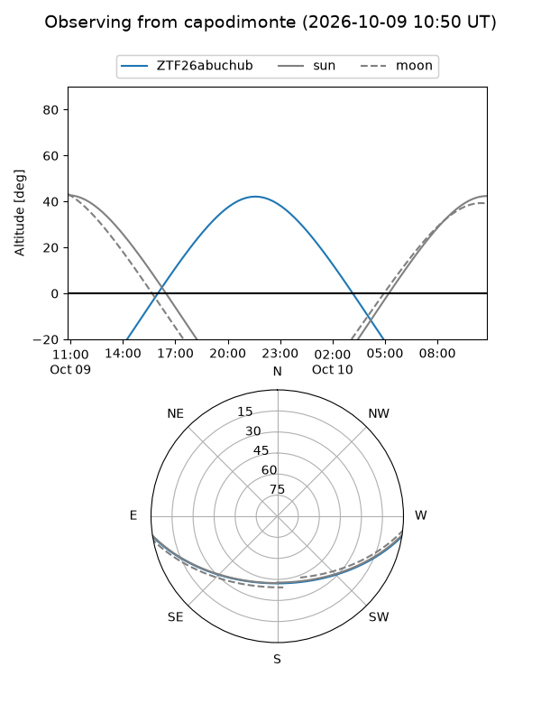
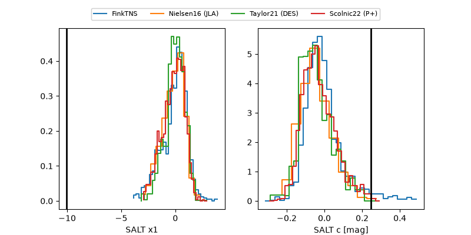

ZTF26abuchub
Target ZTF26abuchub at 2026-10-09 13:25
Aliases and brokers:
FINK-ZTF: ztf.fink-portal.org/ZTF26abuchub
Lasair-ZTF: lasair-ztf.lsst.ac.uk/objects/ZTF26abuchub
ALeRCE-ZTF: alerce.online/object/ZTF26abuchub
Direct TNS query: direct search
alt names
ZTF26abuchub (ztf,fink_ztf)
Coordinates:
equatorial (ra, dec) = 356.0623,-7.14157
equatorial (HMS+DMS) = 23:44:14.94,-07:08:29.65
galactic (l, b) = (81.2906,-64.43470)
Flags:
peak dt: +0.4
Photometry:
last ztfg=20.30
3 ztfg detections
Lightcurve

Visibility



Additional plots
